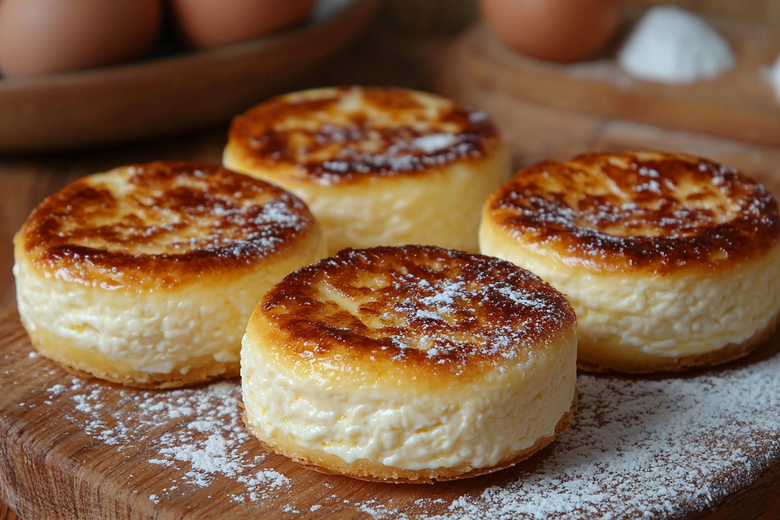
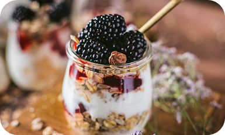
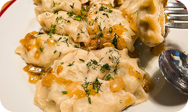
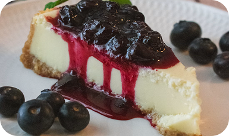

Простые и вкусные идеи для всей семьи
Мы собрали понятные рецепты, где творог раскрывается по-разному — от нежного крема до румяной выпечки.


Воздушная сладость с ванилью и ноткой для детских чаепитий.
⏱ 60 мин. Смотреть рецепт →


Пышные оладушки с добавлением творожных зёрен — нежные и сытные.
⏱ 20 мин. Смотреть рецепт →Если творог влажный, заверните его в чистую марлю и оставьте под лёгким прессом на 20 минут. Тогда понадобится меньше муки, а вкус останется творожным.